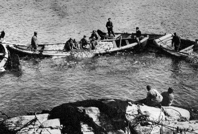

Klädesholmen är en ö belägen i Bohuslän ett par mil norr om Göteborg som under århundraden varit starkt beroende av fisket. Var det gott om fisk så steg invånarantalet och vice versa. Värst var det år 1808 då sillen försvann och invånarna ”levde sämre än råttor”.
I samband med att Marstand fick stadsrättigheter påbjöd den dåvarande kungen att tio öar skulle bebyggas norr om Marstrand. Redan 1594 skriver biskop Jens Nilssøn i sin visitationsberättelse om Klädesholmen som "en gammel fiskeleye".
Liksom de flesta ö- och kustsamhällen fick Klädesholmen sitt rejäla uppsving under det stora sillfisket 1748-1808. Befolkningen ökade rejält och framför allt säsongsarbetare på sillsalterierna och trankokerierna tillträdde ytterligare personer.
Sillfisket sker på vinterhalvåret, och pigor och drängar från Inland, Västergötland eller Halland jobbade härute, när det var lågsäsong inom jordbruket. Det var lite av Klondike-stämning här ute med allt vad det innebar. Hamnen som då var inne på Holmefjorden fylldes med båtar från när och fjärran, som hämtade saltsillen och tranet för vidare transport ut i Europa.
Under den stora sillperioden tillkom kyrkan. den är idag Tjörns äldsta i bruk varande kyrka. Den är dessutom byggd helt på insamlade privata medel.
1808 var det slut för den gången - sillen försvann. Samhället gick ner sig totalt. Befolkningen minskade till dryga trehundra år 1830. Landshövdingen gjorde en privat insamling till Klädesholmens invånare som "levde sämre än råttor". Uppgången börjar 1861 när två Klädesholmare fick reda på att det fanns fisk uppe vid Storeggen (Ålesund). Detta medförde att många båtar drog sig upp mot Norge. När sillen ånyo kom in till kusten under senare halvan av 1800-talet började beredningsindustrin ta form. I de större magasinen, som då började byggas, saltades sill och bereddes fisk. Fiskberedningen var mycket omfattande och i stort sett de flesta av våra nuvarande fabriker har alla börjat med fiskberedning.
Vid sekelskiftet skaffade man mindre båtar, s.k. jakter. Med dessa besöktes i stort sett de flesta svenska hamnar. Från båten sålde man sina produkter, kabeljo, saltsill m.m. Normalt kunde man avverka ett par turer per år, men ibland hade man båten liggande vid en plats.
När man vid sekelskiftet började lära sig kryddning av sill och skarpsill, började man även sälja gaffelbitar och ansjovis. Kunskapen om kryddning fick man genom att köpa recept från grossistföretag. Klara linjer vad gäller kryddning av sill går dock till Norge, som är lite av pionjär på detta område.
Sedan 1970 är det bara sillinläggningar som görs. Fiskberedningen försvann detta år. Men det har även gjorts andra produkter och inläggningar; sardiner, makrill, hummer, räkor, kräftor, kaviar, ärtor, morötter, fiskbullar och plommon.
Klädesholmens historia är sammanställd av Per-Eric Stavfeldt